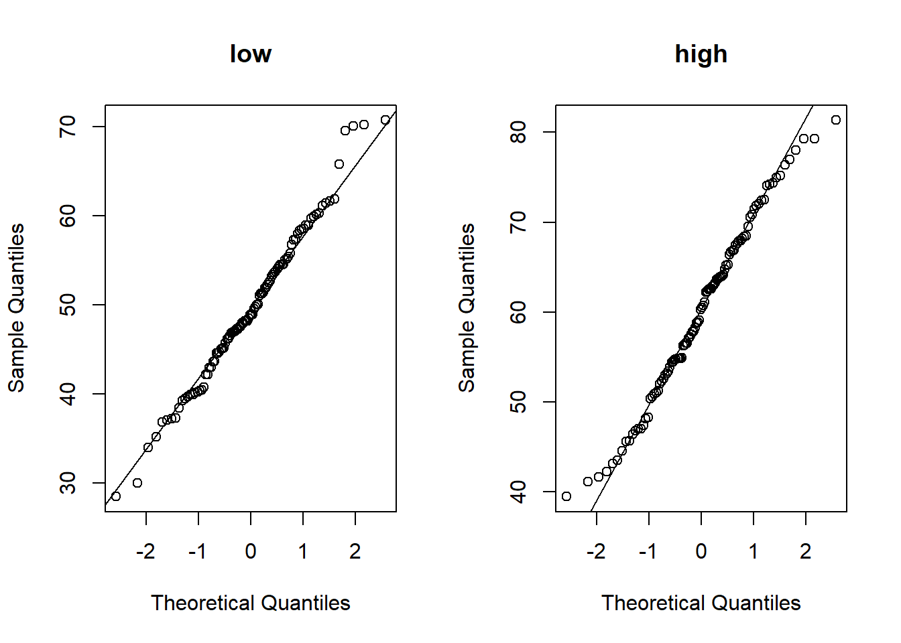
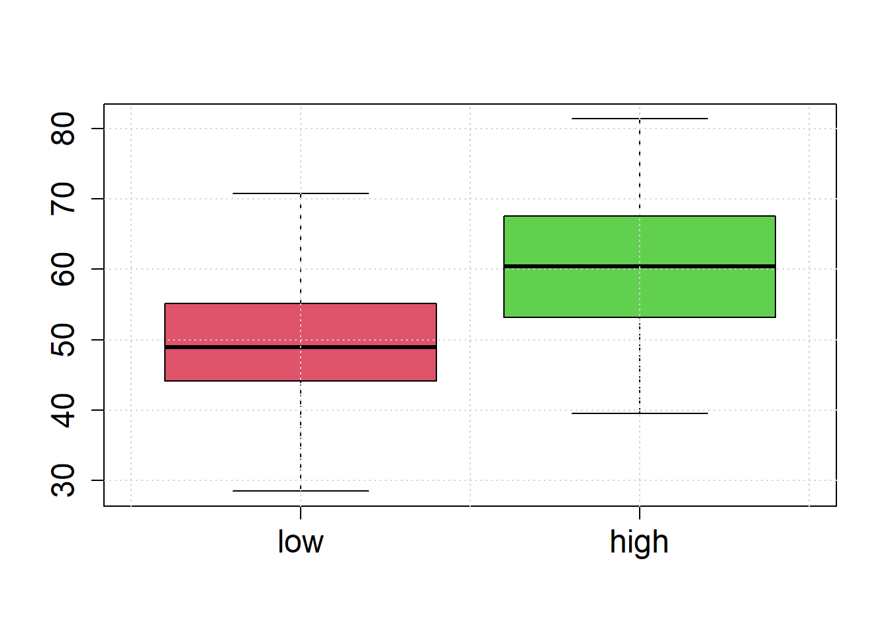
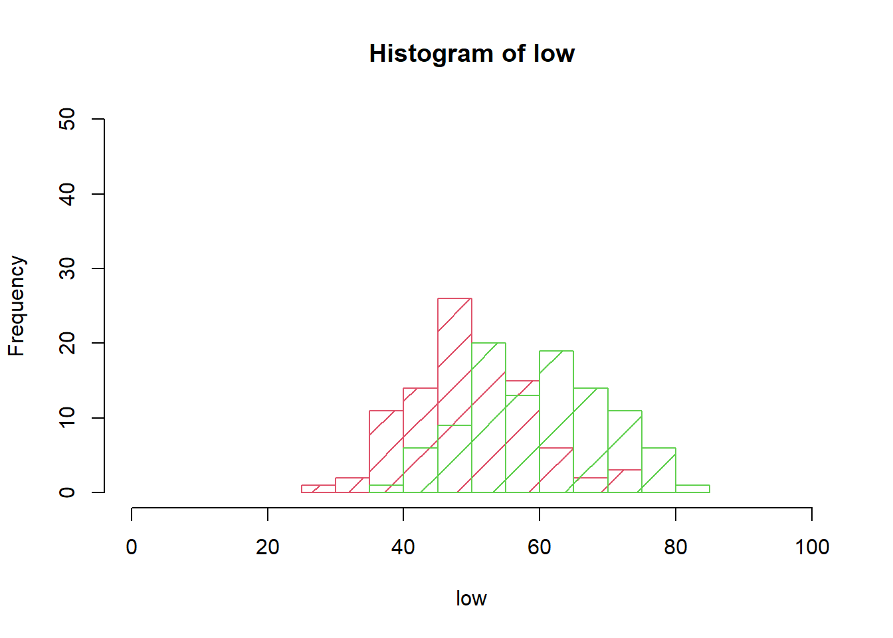
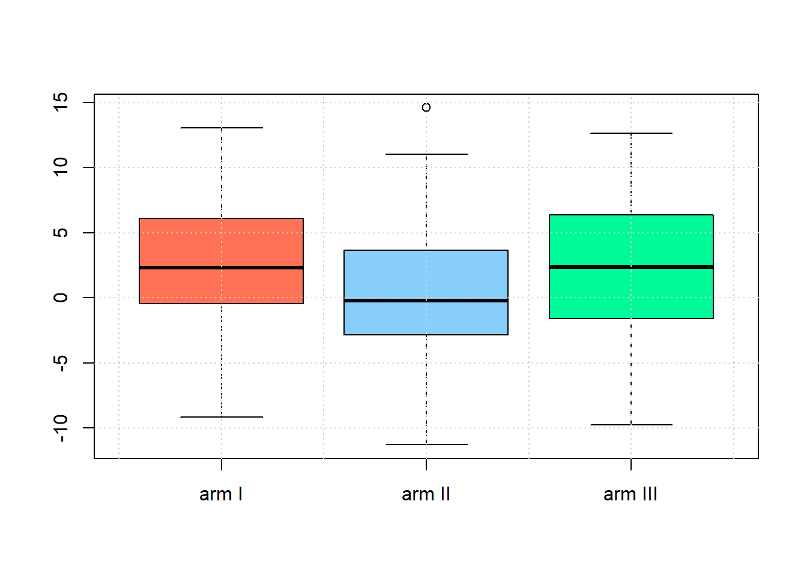
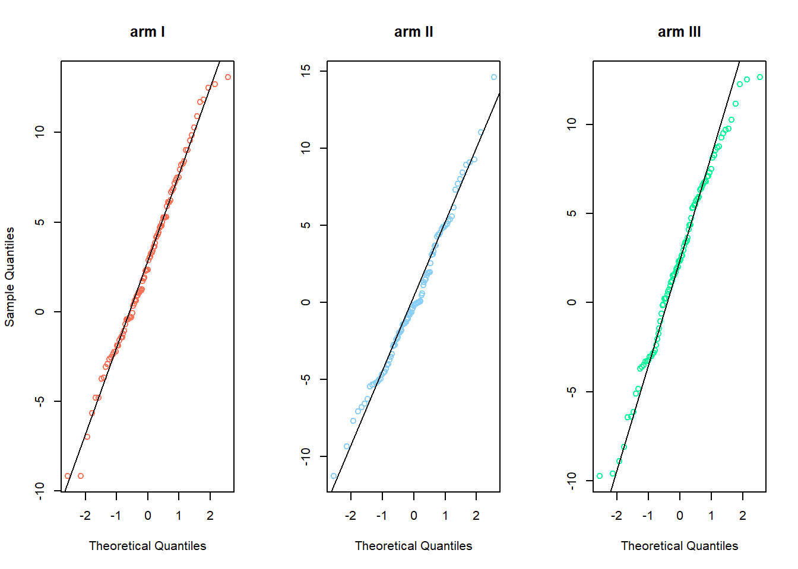

Hypothesis Tests
Exercises
Exercise 4.1
Consider CBF-levels were measured in 100 subjects with low-grade tumors and 100 subjects with high-grade tumors. Here we simulate the measurements from the normal distribution.
set.seed(12) # we set the seed to get a reproducible random result.
n = 100
low = rnorm(n = n, mean = 50, sd = 10)
high = rnorm(n = n, mean = 60, sd = 10)In a real-world experiment you would first check whether your data is normally distributed (necessary for t-test). Draw quantile-quantile plots (QQ-plots) to check the normality-assumption (qqnorrm,qqline).
par(mfrow=c(1,2))
qqnorm(low,main='low')
qqline(low)
qqnorm(high,main='high')
qqline(high)
Illustrate the sample values by box-plots and histograms to check whether the assumption of equal variances seems reasonable.
boxplot(low, high, names=c("low", "high"),cex.lab=1.5, cex.axis=1.5,col=c(2,3))
grid()
hist(low, border=2, xlim=c(0, 100), ylim=c(0, 0.5*n), density=5, col=2)
hist(high, border=3, add=TRUE, density=2.5, col=3)
Perform the t-test (t.test).
a = t.test(low, high)
a = t.test(low, high, var.equal = TRUE)
#a = t.test(low, high, paired = FALSE,
# alternative = "two-sided",
# conf.level = 0.95)
a##
## Two Sample t-test
##
## data: low and high
## t = -7.8758, df = 198, p-value = 2.19e-13
## alternative hypothesis: true difference in means is not equal to 0
## 95 percent confidence interval:
## -13.014823 -7.802415
## sample estimates:
## mean of x mean of y
## 49.68831 60.09693# mean difference
a$estimate[1] - a$estimate[2]## mean of x
## -10.40862Interpret the results.
Exercise 4.2
Repeat the above computer simulation with sample sizes \(n=5\) per group. Analyze whether the test results lead to a false positive or false negative decision.
set.seed(1)
n = 5 ### Sample Size
low = rnorm(n=n, mean=50, sd=10)
high = rnorm(n=n, mean=60, sd=10)
t.test(low, high, var.equal = TRUE)##
## Two Sample t-test
##
## data: low and high
## t = -1.921, df = 8, p-value = 0.09098
## alternative hypothesis: true difference in means is not equal to 0
## 95 percent confidence interval:
## -22.133561 2.016246
## sample estimates:
## mean of x mean of y
## 51.29270 61.35136Exercise 4.3
Load the data frame in the dimarta_trial.csv file.
dimarta_df<-read.csv('./data/dimarta_trial.csv',sep=',')
str(dimarta_df)## 'data.frame': 296 obs. of 6 variables:
## $ PatientID : chr "txdjezeo" "htxfjlxk" "vkdqhyez" "dbuvrwfq" ...
## $ arm : chr "I" "III" "I" "III" ...
## $ histamine_start: num 58.6 36.1 57.7 56.6 NA ...
## $ histamine_end : num 67 28 57.3 57.4 67.9 ...
## $ qol_start : int 3 3 2 2 5 2 4 2 3 1 ...
## $ qol_end : int 3 4 2 3 7 2 6 2 3 1 ...Compute the difference between histamine_end level and histamine_start level and add the data to the data frame.
dimarta_df$histamine_change<-with(dimarta_df,histamine_end - histamine_start)Use boxplots to check whether the assumption of equal variances of histamine changes between arms seems reasonable .
armI<-subset(dimarta_df,arm=='I')$histamine_change
armII<-subset(dimarta_df,arm=='II')$histamine_change
armIII<-subset(dimarta_df,arm=='III')$histamine_change
boxplot(armI,armII,armIII,names=c('arm I','arm II','arm III'),
col=c('coral1','lightskyblue','mediumspringgreen'))
grid()
Check whether your data is normally distributed (necessary for t-test). Draw quantile-quantile plots (QQ-plots) to check the normality-assumption,(qqnorrm,qqline).
par(mfrow=c(1,3))
qqnorm(armI,main='arm I',col='coral1')
qqline(armI)
qqnorm(armII,main='arm II',col='lightskyblue',ylab=NA)
qqline(armII)
qqnorm(armIII,main='arm III',col='mediumspringgreen',ylab=NA)
qqline(armIII)
To check this you can also use the Shapiro-Wilk’s test, where The null hypothesis is that the data are normally distributed (shapiro.test).
shapiro.test(armI)
##
## Shapiro-Wilk normality test
##
## data: armI
## W = 0.99133, p-value = 0.7977
shapiro.test(armII)
##
## Shapiro-Wilk normality test
##
## data: armII
## W = 0.98671, p-value = 0.4717
shapiro.test(armIII)
##
## Shapiro-Wilk normality test
##
## data: armIII
## W = 0.98543, p-value = 0.4073Let treatment arm I be the control arm and II and III two new types of drugs. Check if the population means of arm I and II are equal, then do the same for arm I and III (t.test).
#when the variance are not equal we the Welch t-test
t.test(armI,armII)
##
## Welch Two Sample t-test
##
## data: armI and armII
## t = 3.6231, df = 185.99, p-value = 0.0003755
## alternative hypothesis: true difference in means is not equal to 0
## 95 percent confidence interval:
## 1.158997 3.930029
## sample estimates:
## mean of x mean of y
## 2.7351579 0.1906452
t.test(armI,armII,var.equal = TRUE)
##
## Two Sample t-test
##
## data: armI and armII
## t = 3.6225, df = 186, p-value = 0.0003762
## alternative hypothesis: true difference in means is not equal to 0
## 95 percent confidence interval:
## 1.158791 3.930235
## sample estimates:
## mean of x mean of y
## 2.7351579 0.1906452
t.test(armI,armIII)
##
## Welch Two Sample t-test
##
## data: armI and armIII
## t = 0.55219, df = 181.12, p-value = 0.5815
## alternative hypothesis: true difference in means is not equal to 0
## 95 percent confidence interval:
## -1.056181 1.877047
## sample estimates:
## mean of x mean of y
## 2.735158 2.324725
t.test(armI,armIII,var.equal = TRUE)
##
## Two Sample t-test
##
## data: armI and armIII
## t = 0.55318, df = 184, p-value = 0.5808
## alternative hypothesis: true difference in means is not equal to 0
## 95 percent confidence interval:
## -1.053399 1.874264
## sample estimates:
## mean of x mean of y
## 2.735158 2.324725Interpret the results of the test.